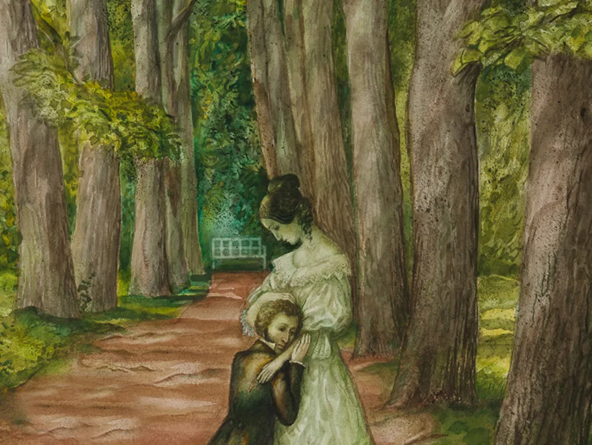

Содержание:
Александр Пушкин начал писать свои первые произведения уже в семь лет. В годы учебы в Лицее он прославился, когда прочитал свое стихотворение Гавриилу Державину. Пушкин первым из русских писателей начал зарабатывать литературным трудом. Он создавал не только лирические стихи, но и сказки, историческую прозу и произведения в поддержку революционеров — за вольнодумство поэта даже отправляли в ссылки.
«Из одной крайности в другую»

Александр Пушкин родился в обедневшей дворянской семье 6 июня 1799 года. В раннем детстве он был молчаливым и малоподвижным ребенком — старшая сестра Ольга вспоминала, что до шести лет мальчик «был просто увалень». Начальное образование Пушкин получил дома. Воспитание его ничем не отличалось от общепринятой тогда в дворянских семьях системы: родители нанимали ему гувернеров и учителей из Франции, Германии, Англии, России.
Учеба давалась Пушкину тяжело, а преподаватели отмечали, что он не прилежен. Однако вскоре мальчик увлекся чтением. «Проводил бессонные ночи и тайком в кабинете отца пожирал книги одну за другой», — вспоминал позже его младший брат Лев.
Любовь к чтению переросла в попытки создавать собственные тексты. Уже в семь лет Пушкин сочинял на французском языке маленькие комедии, подражая Мольеру. Позже, прочитав произведения Лафонтена, юный автор захотел писать басни. А ознакомившись с «Генриадой» Вольтера, Пушкин задумал поэму в шести песнях: все прочитанные книги вдохновляли начинающего автора.
«Француз» в Царскосельском лицее
В 1811 году родители Пушкина решили отдать сына в Иезуитский коллегиум, но их планы изменились, когда в Царском Селе открылся лицей для дворянских детей. По протекции друзей Пушкины устроили 12-летнего сына в элитное заведение. Изначально здесь собирались готовить детей из императорской семьи и их сверстников к высшим гражданским чинам. Но статус Лицея понизился: Пушкин учился в привилегированном и закрытом учреждении, но среди равных себе детей из обедневших фамилий. В стенах Лицея многие крепко сдружились. Три товарища — Иван Пущин, Антон Дельвиг, Вильгельм Кюхельбекер — остались друзьями Пушкина на всю жизнь.
В Лицее преподавали известный юрист Александр Куницын, философ Александр Галич, филолог Николай Кошанский. Именно профессора в большей степени влияли на интеллектуальное и нравственное становление лицеистов — родные могли навещать своих детей только по выходным. В будние дни занятия начинались в семь утра и продолжались до позднего вечера. В годы учебы Александр Пушкин воспринимал альма-матер как «монастырь» и мечтал о свободе, которая наступит с окончанием Лицея.
Учился Пушкин не очень хорошо, особенно тяжело юному писателю давались логика и математика. При блестящей памяти ему недоставало усидчивости и внимания. Однако преподаватели отмечали эрудицию воспитанника. В Лицее он продолжал много читать и писать тексты на французском языке. Лицеист Сергей Комовский вспоминал, что из-за любви к этому языку Пушкина «называли… в насмешку французом, а по физиономии и некоторым привычкам обезьяною и даже смесью обезьяны с тигром».
На русском языке Александр Пушкин составлял небольшие эпиграммы и послания, а также намечал структуру будущей автобиографии. Юного автора настолько увлекало литературное творчество, что идеи произведений рождались одна за другой на несколько месяцев вперед: «Вчера написал я третью главу «Фатама, или Разум человеческий». <…> Начал я комедию — не знаю, кончу ли ее. Третьего дня хотел я написать ироическую поэму «Игорь и Ольга». Летом напишу я «Картину Царского Села»». Писал Пушкин и стихотворения. В 1814 году он впервые опубликовал одно из них — «К другу-стихотворцу» — под псевдонимом Александр Н.к.ш.п. в журнале «Вестник Европы».
Первый крупный успех ждал Пушкина в 1815 году во время зимнего переводного экзамена — 15-летний лицеист прочитал свое стихотворение «Воспоминания в Царском Селе». На экзамене присутствовал Гавриил Державин, он был потрясен творением юного поэта. Пушкин позже писал: «Не помню, как я кончил свое чтение; не помню, куда убежал. Державин был в восхищении; он меня требовал, хотел меня обнять… Меня искали, но не нашли».
Служба и карьера Пушкина
В 1817 году Александр Пушкин окончил Лицей. По успеваемости он был 24-м из 29 выпускников. Пушкина направили в Коллегию иностранных дел — чиновником X класса. Но там он только числился: государственная служба мало привлекала юношу. После шести лет учебы Пушкин с головой окунулся в светскую жизнь столицы и, как известный и заслуженный автор, попал в общество петербургских писателей. Еще в Лицее он стал членом литературного кружка «Арзамас», который боролся с архаическими языковыми традициями.
В 1819 году Пушкин вступил в литературно-театральное общество «Зеленая лампа» при декабристском «Союзе благоденствия». Его участники пропагандировали свободолюбивые идеи. На собраниях читали стихи, обсуждали театральные премьеры, критиковали публицистические статьи. Здесь велись не только светские споры, но и политические беседы. Все это отразилось на творчестве Пушкина: он написал несколько эпиграмм на государственных деятелей того времени, оду «Вольность», стихотворения «К Чаадаеву» и «Деревня».
Острые политические произведения навлекли гнев Александра I, и император решил сослать Пушкина в Сибирь или в Соловецкий монастырь. Однако за поэта заступился Николай Карамзин: по службе Пушкина перевели из столицы на Юг. Перед отъездом, в 1820 году, Александр Пушкин закончил поэму «Руслан и Людмила». Василий Жуковский очень высоко оценил это произведение и подарил поэту свой портрет с подписью «Победителю ученику от побежденного учителя».
Южная ссылка

Весной 1820 года Александр Пушкин отправился в Кишинев, в канцелярию главного попечителя колонистов Южного края. По пути к новому месту службы поэт сильно заболел. Чтобы поправить здоровье, Пушкин поехал сначала на Кавказ, затем — в Крым. Путевые впечатления от юга империи позже отразились в некоторых его произведениях. Наконец, в сентябре 1820 года Пушкин прибыл в Кишинев.
Новый начальник генерал-лейтенант Иван Инзов относился к службе своего подчиненного снисходительно и никаких должностных дел ему не поручал. Своим временем Пушкин распоряжался как хотел: общался с членами «Союза благоденствия», вступил в масонскую ложу «Овидий». В свободные часы он по-прежнему писал. В этот период появились «Кавказский пленник», «Гавриилиада», «Братья-разбойники», «Бахчисарайский фонтан», «Песнь о вещем Олеге». Также Пушкин начал работать над романом в стихах «Евгений Онегин».
В это время в Петербурге стали выходить книги поэта — «Руслан и Людмила», «Кавказский пленник», «Бахчисарайский фонтан». С них и началась профессиональная деятельность Пушкина: он первым из писателей в России стал зарабатывать литературным трудом.
В 1823 году Пушкин переехал в Одессу. Здесь он устроился в канцелярию графа Воронцова. Однако вскоре служебные и личные конфликты привели к тому, что Пушкин попросил отставки.
Меж тем в Москве в 1824 году полиция вскрыла письмо Пушкина: тот писал Кюхельбекеру об увлечении «атеистическими учениями». За такие высказывания поэту грозила не просто отставка. Пушкина отправили в настоящую ссылку в семейное имение в селе Михайловском Псковской губернии — Юг все-таки выдавали за принудительную командировку. Писателя лишили скромного жалованья, установили надзор, а конец срока наказания никак не обозначили.
Пушкин в Михайловском


В Михайловском Пушкин вел уединенный образ жизни. Родители вместе с сестрой Ольгой и братом Львом покинули имение, чтобы ссыльный дурно не влиял на семью. Поэт поначалу обрадовался тишине и спокойствию, но с наступлением осенних холодов затосковал. Единственным развлечением для Пушкина стали беседы с няней Ариной Родионовной. Ее сказки, как говорил поэт, исправляли недостатки французского воспитания. Он записывал сюжеты волшебных историй, а позднее использовал их в своих произведениях.
Затворнический образ жизни не стал губительным для Пушкина, скорее наоборот: писатель много читал, работал, размышлял о творчестве. В первую михайловскую осень он начал писать «Бориса Годунова». Эта трагедия стала важным этапом в творчестве поэта: он перешел от романтизма с его героикой к реалистическому воплощению персонажей.
Из творчества поэта ушли экзотика и отвлеченность, на первый план вышли современные ему реалии. Завершив трагедию, Пушкин написал князю Петру Вяземскому: «Трагедия моя кончена; я перечел ее вслух, один, и бил в ладоши и кричал, ай да Пушкин, ай да сукин сын!»
Пушкин завершил начатое в Одессе стихотворение «К морю», возобновил работу над автобиографическими записками, написал шуточную поэму «Граф Нулин», любовное стихотворение-посвящение «К ***».
«Я самого себя хочу издать или выдать в свет»
1 декабря 1825 года умер Александр I. Император не оставил наследников, а предполагаемый император Константин, следующий по старшинству брат, от престола отрекся. Претендентом на власть стал Николай Павлович. Междувластием решили воспользоваться члены Северного тайного общества. На утро 26 декабря было назначено восстание. Участники планировали вывести войска на Сенатскую площадь и заставить сенаторов вместо присяги Николаю подписать манифест к русскому народу о созыве Учредительного собрания. В России должна была установиться конституционная монархия или республика. Однако попытка государственного переворота провалилась.
О восстании декабристов Пушкин узнал, будучи в ссылке. Следствие по этому делу не сулило ничего хорошего: стихи поэта нашли у всех арестованных. Литератору пришлось дать расписку, что в тайных обществах он не состоял, об их существовании не знал. Пушкин хоть и переживал о своем положении, но надеялся, что новый император простит его и освободит из ссылки.
В 1826 году вышел первый сборник «Стихи Александра Пушкина». Успех был огромный: том разошелся в несколько недель. В этом году Пушкин написал следующие главы «Евгения Онегина», но публиковать их не торопился, впрочем как и другие произведения. В ответ издателю Петру Плетневу он резко отвечал: «Я самого себя хочу издать или выдать в свет» — то есть освободиться из ссылки.
20 сентября 1826 года Пушкина вызвали на аудиенцию к царю Николаю I. После жестокой расправы с декабристами император хотел расположить к себе общество, поэтому вернул из ссылки любимого всеми известного поэта. Монарх не только освободил Пушкина, но гарантировал высочайшее покровительство и предложил стать его личным цензором.
После беседы с Николаем I литератор надеялся получить полную свободу в творчестве. Однако у царя были иные планы: Пушкин должен был стать поэтом при дворе. Расчет не оправдался. В 1827 году Пушкин написал стихотворение «Арион», в котором выразил верность освободительным идеям. А через жену декабриста, Александру Муравьеву, передал на сибирскую каторгу стихотворение «Во глубине сибирских руд» — послание революционерам.
Цензура усилилась, личную переписку поэта просматривали, о каждом его шаге докладывали шефу Третьего отделения жандармов Александру Бенкендорфу. Пушкину даже запретили свободно ездить по стране и публично читать свои произведения. Несмотря на жесткий контроль, он продолжил отстаивать вольнолюбивые идеи и посвятил этой теме стихотворения «Поэт и толпа», «Поэт».
Личная жизнь Пушкина

В 1829 году на одном из балов Александр Пушкин познакомился с Натальей Гончаровой. Девушке на тот момент было 16 лет, поэту — почти 30. Первая красавица Москвы сразу покорила Пушкина, и через несколько месяцев он сделал Гончаровой предложение. Однако ее мать сослалась на юный возраст девушки и сразу согласия не дала. Расстроенный литератор уехал из Москвы к брату на Кавказ, где в то время шла война.
На Кавказе Пушкин написал цикл стихов, посвященных этому краю: «Кавказ», «На холмах Грузии лежит ночная мгла…», «Обвал», «Делибаш» и «Монастырь на Казбеке». В 1830 году литератор вернулся в Москву и снова сделал предложение Наталье Гончаровой. На этот раз родители благословили пару.
Однако свадьбе мешал тот факт, что у Пушкина не было никакого имущества. Тогда отец поэта выделил сыну часть родового имения Болдино Нижегородской губернии, деревню Кистенево, вместе с двумя сотнями крестьян. Летом 1830 года Пушкин отправился туда, чтобы уладить юридические вопросы.
Болдинская осень
Писатель рассчитывал пробыть в Болдино не более месяца, но эпидемия холеры изменила его планы. Выехать из села было нельзя, поэтому писатель провел здесь три месяца.
Болдинская осень — период небывалого творческого взлета. В Болдине Пушкин закончил «Евгения Онегина», написал «Повести покойного Ивана Петровича Белкина», «Историю села Горюхина», «Маленькие трагедии», драму «Русалка», поэму «Домик в Коломне» и множество стихотворений.
В Москву Пушкин вернулся в декабре 1830 года, а через несколько месяцев обвенчался с Натальей Гончаровой. Поэт мечтал об уединении, тихой семейной жизни и спокойной работе над книгами. Однако его желаниям не суждено было сбыться.
Дуэль и смерть поэта
В 1831 году Александра Пушкина приняли на службу в качестве историографа, чтобы тот писал «Историю Петра». Но писателя больше увлекала биография бунтаря Емельяна Пугачева. Пушкин замыслил создать эпический роман об этой эпохе. Сначала он собирал информацию в архивах, затем отправился по районам пугачевского восстания — Поволжью и Приуралью, чтобы достоверно описать события того времени.
После экспедиции Александр Пушкин уехал в Болдино. В родовом имении он работал над научным сочинением «История Пугачева», написал «Медного всадника», «Анджело», «Пиковую даму», «Сказку о рыбаке и рыбке», «Сказку о мертвой царевне и о семи богатырях». Вторая Болдинская осень оказалась вдвое короче предыдущей, но не менее продуктивной для Пушкина.
Николай I пожаловал Пушкину младшее придворное звание — чин камер-юнкера. Теперь чету Пушкиных могли официально приглашать на придворные балы. Эту должность поэт считал оскорбительной для своего возраста. Писатель хотел отказаться от нового звания, но пришлось смириться.
В 1830-е годы Пушкин писал уже только реалистичные произведения. Но его современники не были готовы к новому литературному направлению, которое описывало социальное неравенство, исторические феномены и другие сложные стороны жизни. Собратья по перу не принимали новые произведения писателя, в придворных кругах он тоже не встречал поддержки. В Петербурге ходили сплетни о жене Пушкина и ее поклонниках, поэту приходили анонимные письма. Поэт не мог оставаться хладнокровным и выносить оскорбительные слухи.
8 февраля 1837 года состоялась дуэль Александра Пушкина с Жоржем Дантесом — главным интриганом, порочащим репутацию Натальи Пушкиной. Во время поединка поэт был тяжело ранен и скончался через два дня. Похоронили Александра Пушкина на территории Святогорского монастыря Псковской губернии.
Интересные факты
1. После смерти Пушкина Николай I определил 25-летний срок собственности наследников писателя на его произведения, потом срок продлили еще на 25 лет. Это решение об авторском праве помогло наследникам Пушкина, но наследию писателя повредило: его книги издавали редко. В 1887 году, спустя 50 лет после кончины Пушкина, любой издатель мог печатать его произведения, никому ничего не заплатив. Когда Алексей Суворин в этом же году выпустил первый десятитомник, читатели буквально снесли прилавок и раскупили все экземпляры.
2. Александр Пушкин любил азартные игры. Еще в лицейские годы писатель пристрастился к картам: он видел в них поэзию риска, испытание судьбы. Самую популярную игру того времени — в банк, или штосс, — он воспел в «Пиковой даме». Позже с гордостью он писал в дневнике: «Моя «Пиковая дама» в большой моде. Игроки понтируют на тройку, семерку и туза».
Играл Пушкин обычно неудачно. Перед Южной ссылкой 1820 года он поставил на кон рукопись первого сборника стихов и проиграл. Выкупить ее назад и издать удалось только через несколько лет. Пушкин и позже ставил свои неопубликованные произведения.
3. У поэта был вспыльчивый характер. Он вызывал противников на дуэль и всегда носил с собой пистолет. Товарищ писателя Александр Вельтман писал, что Пушкин сразу после пробуждения тренировал меткость и палил из пистолета в стену, сидя голым в постели. Потом «прогулочное» оружие сменила семикилограммовая металлическая трость для твердости руки при стрельбе.
Иван Липранди вспоминал: «Я знал Александра Сергеевича вспыльчивым, иногда до исступления; но в минуту опасности <…> Пушкин обладал в высшей степени невозмутительностью… Когда дело дошло до барьера, к нему он являлся холодным как лед». Так, например, на дуэль с Александром Зубовым Пушкин пришел с черешнями, и пока оппонент целился в писателя, спокойно ел ягоды. Когда Зубов промахнулся, Пушкин стрелять в ответ отказался. Этот эпизод позже лег в основу повести «Выстрел».
4. У Пушкина были африканские корни. Смуглый «шатен с сильно вьющимися волосами, голубыми глазами и необыкновенной привлекательности» превратил свою внешность в одну из особенностей.
Он был франтом. Сергей Соболевский рассказывал, что юному поэту приходилось просить бережливого отца, «чтобы ему купили бывшие тогда в моде бальные башмаки с пряжками, и как Сергей Львович предлагал ему свои старые, времен Павловских».
Однако в своих нарядах Пушкин часто доходил до крайности. Так, например, купеческий сын Иван Лапин писал в своем дневнике о встрече с Пушкиным на Святогорской ярмарке 1825 года: «Некоторым образом удивил странною своею одеждою, а например: у него была надета на голове соломенная шляпа, в ситцевой красной рубашке, опоясавши голубою ленточкой, с железною в руке тростию, с предлинными черными бакенбардами, которые более походят на бороду; также с предлинными ногтями, которыми он очищал шкорлупу в апельсинах и ел их с большим аппетитом, я думаю — около дюжины». Длинные ногти писатель отрастил после лицея. Такими их поддерживал всю жизнь — они хорошо видны на портрете Ореста Кипренского. Чтобы самый длинный из ногтей не ломался, Пушкин носил наперсток.
5. Во время работы над «Историей Пугачева» Пушкин побывал в деревне Берды Оренбургской губернии, где была ставка мятежников. Здесь писатель опрашивал очевидцев крестьянской войны о самозванце. Казаки недоумевали, почему приезжий человек расспрашивал их с таким пристрастием о разбойнике и еще заплатил за их рассказ. Они решили, что чужак подбивает их на бунт, и донесли на него. Об этом вспоминал Владимир Даль, который путешествовал в то время с Пушкиным: ««Вчера-де приезжал какой-то чужой господин, приметами: собой невелик, волос черный, кудрявый, лицом смуглый, и подбивал под пугачевщину и дарил золотом; должен быть антихрист, потому что вместо ногтей на пальцах когти». Пушкин много тому смеялся».